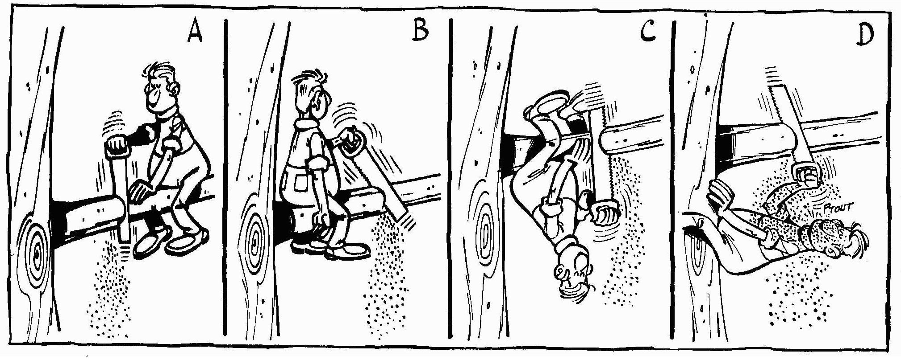

Unleash Postgresql features in your PHP developments
Created by Grégoire HUBERT / @chanmix51
About Me
- Grégoire HUBERT
- Founder of PragmaFabrik
- Author of Pomm

There is a (r)evolution going on
- Python / Ruby / Js are racing at supporting Postgresql features
- Play2 (ANorm) / .NET (LinQ) / Java (JOOQ) alternative to ORM
There is a (r)evolution going on

Why is it important ?
- Business oriented applications
- ➥ complex models
- ➥ complex queries
- ➥ complex interactions
- Model driven developments
Tools matter
SQL has been made that for !
- ➥ First version in 1974 (IBM)
- ➥ 8 ISO revisions since 1986
- ➥ CTE (SQL99)
- ➥ Window functions (SQL 2003 & 2008)
- ➥ Even XML (SQL 2003 & 2008)
Declarative language
Wikipedia definition says:- ➥ Express the what not the how.
- ➥ No side effects.
- ➥ Clear correspondance to mathematical model.
Postgres
- ➥ Namespace support
- ➥ Fully supports SQL2008
- ➥ Procedural languages support (Perl/Python/R/JsV8…)
- ➥ Foreign data wrapper
- ➥ Asynchronous messaging system
- ➥ Complex types (inet, ts_vector, points, array, hstore, json…)
- ➥ Extensible
Tools matter

How to use it efficiently ?
Pomm: a take on ORM limitations
- ➥ Do not enforce OO in relational
- ➥ Do not use database abstraction
Enforcing OO in database
- ➥ Does not define data structure where it is the more constrained.
- ➥ Hard coupling between projection and class definition.
Structure definition by constraint
- ➥ Types are constraints
- ➥
NOT NULL,UNIQUE… - ➥
CHECKmakes your data consistent. - ➥ Structuring data is business logic in the database.
Relax !
Coupling projection and class
- ➥ Means
SELECT * FROM … - ➥ No distinction between technical and business data.
- ➥ Turns the database into an entity database.
Coupling projection and class
Defining an entity
Coupling projection and class
Turns the database into an entity store:
Coupling projection and class
In which the relational db has poor added value

The power of the projection